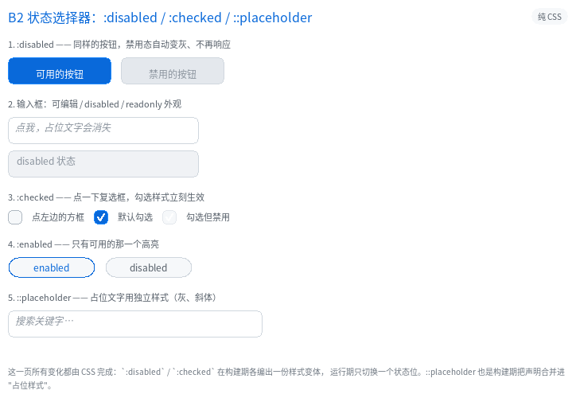
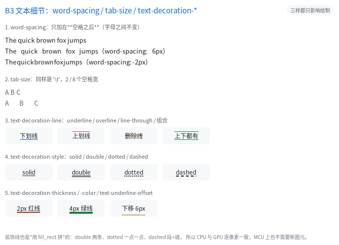
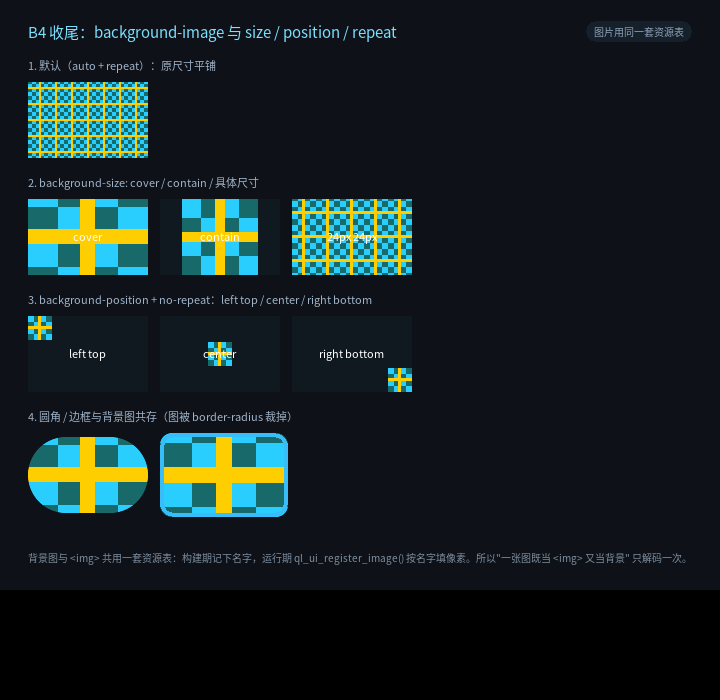

CSS3 补全收官：状态选择器、文本细节、背景图
五批计划（B1–B5）走到这一篇就收尾了。前面几篇分别讲过单位与尺寸
（CSS 效果检阅）、选择器与 ::before
（CSS3 补全）、绘制细节（CSS 效果检阅 与
example/25_b4）、布局与交互（example/24_b5）；这一篇补齐最后三块，
并说明为什么 filter: blur() 还没做。
| 批 | 这一篇补的 | 例程 |
|---|---|---|
| B2 | :disabled / :enabled / :checked / ::placeholder（含复选框控件） |
26_css_states |
| B3 | word-spacing / tab-size / text-decoration-*（line/style/color/thickness/underline-offset） |
27_css_text2 |
| B4 | background-image: url() + background-size / -position / -repeat |
28_bg_image |
1. 状态选择器（B2）
三个伪类的共同点：在构建期就编好另一份样式，运行期只翻一个状态位。
.btn:disabled { background-color: #2A3442; color: #6C7783; }
input:enabled { border-color: #2E6BE6; }
.cb:checked { background-color: #2E6BE6; }
input::placeholder { color: #5E6B7A; font-style: italic; }
<button disabled>禁用的按钮</button>
<input type="checkbox" checked>
<input type="text" placeholder="搜索关键字…">
实现要点：
disabled/checked/selected这些属性在建表期就变成节点标志位；:disabled与:checked各编一份样式变体存在QLUINode里（与:hover同构）。- 运行期状态优先级：
disabled > active > focus > checked > hover。 禁用元素不该再"悬停高亮"，所以它排最前。 :enabled= "没有 disabled 属性"：建表期按节点属性决定要不要把这个位打开。- 复选框是顺带补上的最小控件：
<input type="checkbox">有自己的一套 UA 默认 （16×16 方框、无内边距），点一下切换:checked，勾选时画一个 √。 它不进输入框池（没有文本可编辑），所以 MCU 上不占缓冲。 ::placeholder不是生成内容的伪元素：构建期把input::placeholder的声明 合并进宿主样式，单独存一份"占位样式"；输入框为空时用它画那句提示。
别忘了
::placeholder的样式继承宿主（字号、字体都跟着输入框）， 这正是我们要的行为：只改颜色/字形，不改排版。
2. 文本细节（B3）
.p { word-spacing: 6px; } /* 只加在空格之后，字母之间不变 */
pre { tab-size: 4; } /* '\t' 折算成 4 个空格 */
a { text-decoration: underline; text-decoration-color: #38BDF8;
text-decoration-thickness: 2px; text-underline-offset: 3px; }
.d { text-decoration: underline; text-decoration-style: dotted; }
.o { text-decoration: overline; } /* B3 新增 */
word-spacing加在空格之后（CSS 就是这么定义的），所以word-spacing: -2px会把词挤在一起 —— 例程第 1 节能直接看出来。tab-size在构建期把\t展开成 N 个空格（white-space: pre系列才保留）， 运行期一个字符判断都没有。text-decoration-*的形态（solid / double / dotted / dashed）、粗细、颜色、 下划线偏移都是"用fill_rect拼"出来的：不需要新图元，CPU 与 GPU 逐像素一致。text-decoration-line支持underline/line-through/overline及其组合。
3. 背景图（B4 收尾）
.card { background-image: url(checker); background-size: cover; }
.icon { background-image: url(checker); background-size: 24px 24px;
background-repeat: no-repeat; background-position: right bottom; }
- 资源与
<img src>共用一张表：构建期把名字记进文本池， 运行期ql_ui_register_image()按名字填像素 —— 同一张图只解码一次。 - 几何计算复用
object-fit那一套：cover/contain/<w> <h>；background-position与object-position同式（百分比在"多出来的余量"里算）。 - 平铺时先把起点对齐到可见瓦片，再把裁剪设成边框盒 —— 否则会画到兄弟节点上。
- 背景图铺在背景色之上、边框之下，圆角由
border-radius裁（走图片自己的 SDF）。
4. 为什么 filter: blur() 还没做
五批清单里 B4 还留着 filter 一项。这一项的成本与前四项不是一个量级：
| 函数 | 需要什么 | 结论 |
|---|---|---|
brightness/contrast/saturate/grayscale/sepia/invert/hue-rotate |
逐图元颜色矩阵（CPU 改混合路径、GPU 加 uniform） | 可以做，但等于给每条绘制入口加一次矩阵 |
blur() / drop-shadow() |
离屏图层：子树的绘制结果要先合成到一张图，再整体模糊 | 与 transform: rotate() 同级的新子系统 |
backdrop-filter |
—— | 已有（15_backdrop） |
所以这一轮先把"真实页面里出现频率高得多"的三块做完，filter 与
transform: rotate() 一起留作单独立项。覆盖表里如实标 ⏳，不假装支持。
5. 三条例程怎么跑
./build/example/example_26_css_states # 点复选框 / 试 disabled 输入框
./build/example/example_27_css_text2 # 看 word-spacing / tab-size / 装饰线
./build/example/example_28_bg_image # 看 cover/contain/position/repeat
三页都是纯 CSS：没有任何运行期样式匹配，也没有一行 JS。



6. 这一轮的验收
| 项 | 数字 |
|---|---|
| 新增测试 | test_m8（61 项：状态/文字/背景逐点取色 + 7 条非法值必须报错） |
| blob | v26 → v27（QLUIStyle 240 → 272，QLUINode 20 → 28） |
| golden | 29 页全部重生成，图像逐像素未变（只改了结构体布局） |
| 三套构建 | 普通 / strict / ASan 各 74/74 |